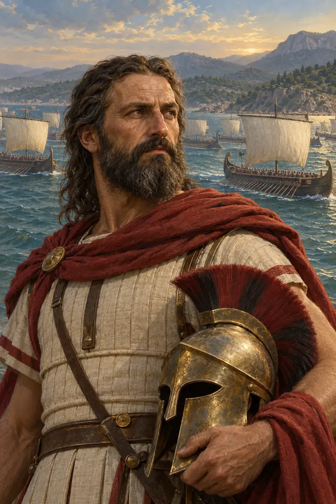
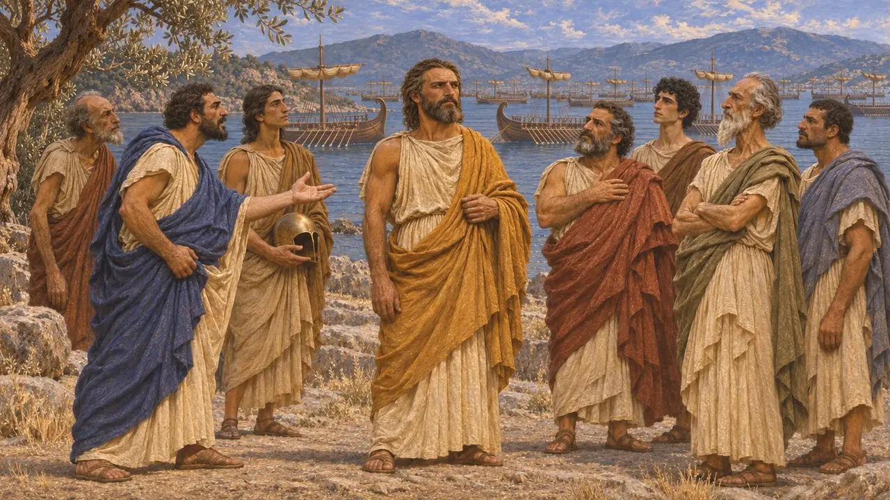
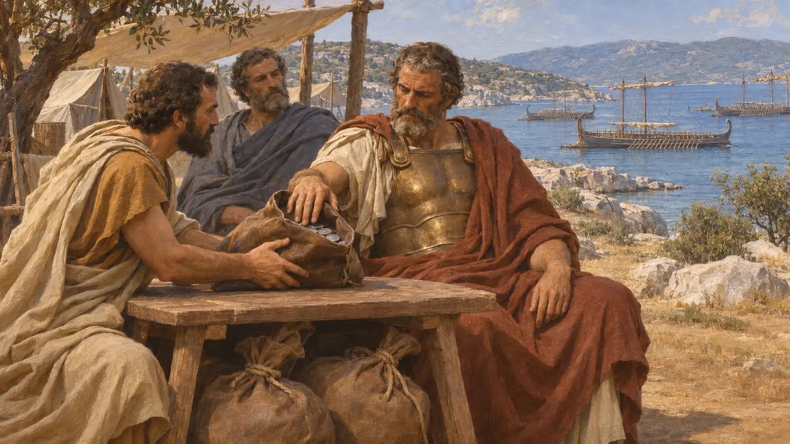
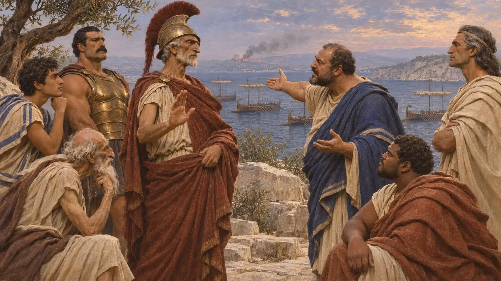
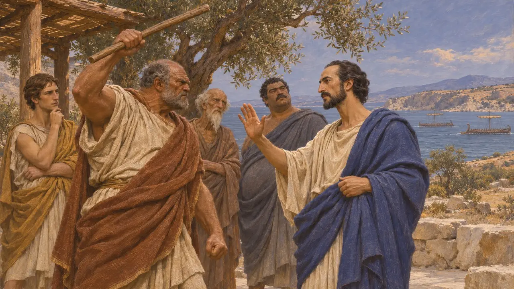
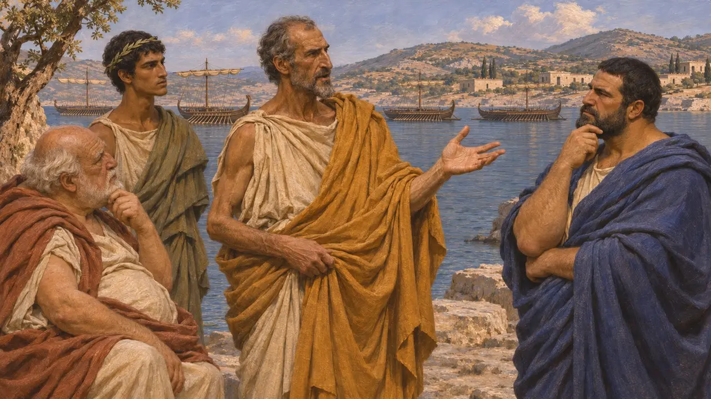

Eurybiades
MÖ 480'de Artemision ve Salamis'te Yunan müttefik donanmasının Spartalı komutanı
Eurykleides oğlu Eurybiades, MÖ 480'de Kserkses'in donanmasıyla savaşan Yunan donanmasının başkomutanlığını üstlenen Spartalıydı. Sparta yalnızca birkaç gemi göndermişti, ancak müttefikler bir Atinalının emri altında savaşmayı reddettiğinden komuta ona verildi. Herodotos onu Themistokles'in zorladığı temkinli bir önder olarak gösterir; tarihçiler bu tablonun ne ölçüde adil olduğunu hâlâ tartışır.
Oyunda: Oyunun kroniği Eurybiades'i, müttefikler hiçbir Atinalının ardından gitmeyeceği için Artemision'da ve Salamis'te Yunan donanmasına komuta eden Spartalı olarak anar. Bu, Herodotos'un anlatısıyla örtüşür.

Müttefikler Atina'yı reddettiği için seçildi
Antik anlatıHerodotos'a göre müttefikler bir Atinalının ardından gitmeyi reddetmiş ve donanmayı dağıtmakla tehdit etmişti; bunun üzerine Atinalılar geri adım attı. Onun verdiği rakamlara göre Sparta, Artemision'da Atinalıların 127 gemisine karşı yalnızca on gemi, Salamis'te ise 180 gemiye karşı on altı gemi sağlamıştı. Herodotos, Eurybiades'in kraliyet soyundan gelmediğini, dolayısıyla Sparta'nın iki kralından biri olmadığını da ekler. Makamı, Sparta'nın deniz gücüne değil, ittifakın önderi olarak taşıdığı saygınlığa dayanıyordu.
Herodotus 8.1-3, 8.42-44

Artemision ve Euboia parası
Antik anlatıHerodotos'un anlattığına göre yüzüstü bırakılmaktan korkan Euboialılar, donanmayı Artemision'da tutması için Themistokles'e otuz talent ödedi. Themistokles bunun beşini Eurybiades'e, üçünü de Korintli Adeimantos'a verdi, kalanını kendine ayırdı. Donanma yerinde kaldı, üç gün savaştı ve ancak Thermopylai geçidinin düştüğü haberi gelince güneye çekildi. Bazı tarihçiler rüşvet hikâyesinin Themistokles'e düşman bir gelenekten kaynaklandığını düşünür.
Herodotus 8.4-5, 8.15-18, 8.21

Salamis'teki meclisler
Antik anlatıPerslerin Atina Akropolisi'ni aldığı haberi gelince müttefik komutanlar Korinthos Kıstağı'na çekilme kararı aldı. Herodotos'a göre Themistokles, Eurybiades'i meclisi yeniden toplamaya ikna etti. Orada dar boğazda savaşmanın Yunanlıların lehine olduğunu savundu ve Atinalıların İtalya'daki Siris'e yelken açacağı tehdidinde bulundu. Bunun üzerine Eurybiades kalıp Salamis'te savaşmaya karar verdi.
Herodotus 8.49, 8.56-64

Vur, ama dinle
Geç dönem efsanesiYaklaşık altı yüzyıl sonra yazan Plutarkhos, tartışma sırasında Eurybiades'in Themistokles'e vurmak için asasını kaldırdığını anlatır. Themistokles'in de "Vur, ama dinle" anlamında, dinlemek koşuluyla vurabileceğini söyleyerek karşılık verdiği rivayet edilir. Herodotos bu öyküyü anlatmaz. Öykü sabır ve iyi öğüt üzerine ahlaki bir anlatı gibi okunur ve büyük olasılıkla olup bitenin bir kaydı değildir.
Plutarch, Themistocles 11

Komutanlığı nasıl değerlendirilmeli
TartışmalıHerodotos'a göre Salamis'ten sonra Eurybiades, Kserkses'in köprülerini yıkmak için yelken açılmasına karşı çıktı, çünkü kapana kısılmış bir kral Yunanistan'da daha çetin savaşırdı. Spartalılar daha sonra yiğitliği için ona, bilgeliği için de Themistokles'e birer zeytin tacı verdiler. Herodotos büyük olasılıkla ağırlıklı olarak Atinalı kaynaklara dayanıyordu. Bazı tarihçiler bu kaynakların Eurybiades'i olduğundan daha zayıf gösterdiğini düşünür. Pers kaynakları ise sessizdir: hiçbir kraliyet yazıtı ya da tablet ondan veya Salamis yenilgisinden söz etmez.
Herodotus 8.108, 8.124; J. F. Lazenby, The Defence of Greece 490-479 BC, 1993
Kaynaklar
- Herodotus, Histories, book 8
- Plutarch, Themistocles
- J. F. Lazenby, The Defence of Greece 490-479 BC, 1993
- C. Hignett, Xerxes' Invasion of Greece, 1963
- P. Green, The Greco-Persian Wars, 1996